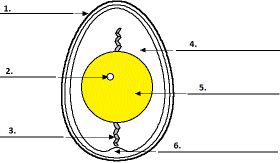

IELTS Reading Exercise: Diagram completion 1.
By completing this exercise you will improve your IELTS Reading skills and train answering IELTS Diagram Completion questions.
As you know, in diagram completion questions your task is to label the parts of a diagram or scheme according to the text. To learn more about this type of IELTS Reading questions, you can see IELTS diagram completion lesson >
Your answering strategy:
- Read the text, underlining the new terms and important names.
- Look at the diagram and think which parts of it you can label.
- Check your assumptions by looking back at underlined terms and label the parts you’re sure of.
Practice
Read the text and label the diagram below.
The chicken egg
Chicken egg consists of six main parts: albumin, yolk, shell, germinal disc, chalaza and air cell. In further paragraphs we will learn all the important information you need to know about these parts.
One of the main parts of the egg is yolk - the yellow, inner part of the egg where the embryo will form. The yolk contains the food that will nourish the embryo as it grows. Yolk is a major source of vitamins, minerals, almost half of the protein, and all of the fat and cholesterol. The yolk contains less water and more protein than the white part of the egg, some fat, and most of the vitamins and minerals of the egg. The yolk is also a source of lecithin, an effective emulsifier. Yolk color ranges from just a hint of yellow to a magnificent deep orange, according to the feed and breed of the hen. Yolk is anchored by chalaza - a spiral, rope-like strand that anchors the yolk in the thick egg white. There are two chalazae anchoring each yolk; one on the top and one on the bottom.
Another very important part of the egg is the albumin, which is the inner thick white part of the egg. This part of the egg is a excellent source of riboflavin and protein. In high-quality eggs, the inner thick albumen stands higher and spreads less than thin white. In low-quality eggs, it appears thin white.
Now let's talk about the outer part of the egg - the shell It is a hard, protective coating of the egg. It is semi-permeable; it lets gas exchange occur, but keeps other substances from entering the egg. The shell is made of calcium carbonate and is covered with as many as 17,000 tiny pores.
Air cell is an air space that forms when the contents of the egg cool and contract after the egg is laid. The air cell usually rests between the outer and inner membranes at the eggs larger end. As the egg ages, moisture and carbon dioxide leave through the pores of the shell, air enters to replace them and the air cell becomes larger.
And last but not least, let's look at the germinal disc. It's a small, circular, white spot (2-3 mm across) on the surface of the yolk; it is where the sperm enters the egg. The nucleus of the egg is in the blastodisc. The embryo develops from this disk, and gradually sends blood vessels into the yolk to use it for nutrition as the embryo develops.
Complete the diagram below.
Write NO MORE THAN TWO WORDS from the passage for each answer. Do not write articles.
